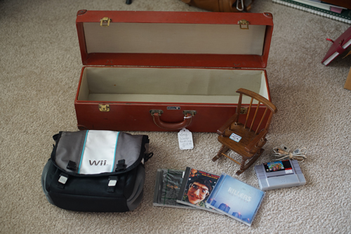

i found my friend at the thrift store today! it's always fun to see him!! I finally got to introduce him to my friend who played splatfests with us!
i checked the purses on display at the front of the store and the cashier was excited to show me them. they were priced over $200 each and i pointed out to him that the prada purses were obviously pleather and disintegrating. hopefully they look more into checking for fakes now before selling them for so much. This is the same thrift store that sold the fake (but leather) hermes to me for $5. they must be only looking at brand names they recognize. I also found a passport case and i opened it and 2 credit cards fell out. people really should be more responsible....
i really recommend carrying measuring tape when thrift shopping! i thought i left mine in my other bag and was searching the store so i could measure the case! luckily it was just in another pocket! i use it for measuring the waist on clothes too so i wont buy skirts way too big for me. its tough not being able to try things on.